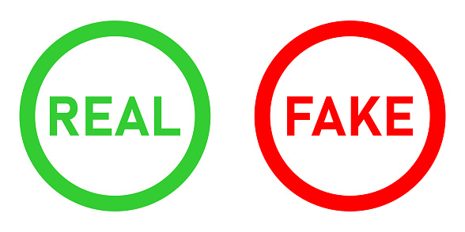

Nepnieuws & AI
Wat is echt
in deze website helpen wij jouw nepnieuws te herkennen, de rol van AI te begrijpen en kritisch na te denken over informatie online.

Onderwerpen
Wat is Nepnieuws?
Leer de definitie, de verschillende soorten nepnieuws en waarom het zo gevaarlijk is voor de samenleving.
AI & Media
Hoe maakt AI nepnieuws makkelijker? En hoe kan diezelfde AI ons helpen om het te detecteren?
Tips
Praktische tips om nepnieuws te herkennen en te vermijden.
Fact-check
Leer hoe je feiten kunt controleren en betrouwbare bronnen kunt vinden.
Quiz
Test je kennis met vier realistische scenario's. Kun jij nepnieuws van echt nieuws onderscheiden?